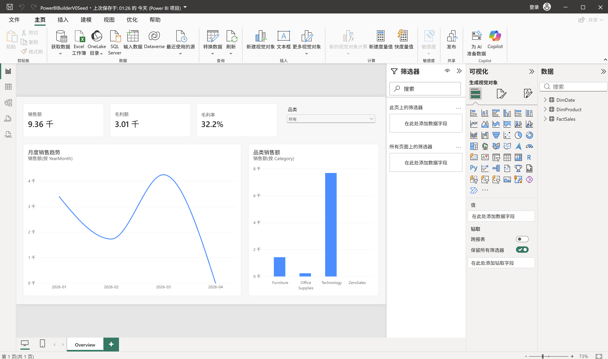

只需提供数据源和需求，无需从零手工建模和制作图表

文件 → 选项和设置 → 选项
全局 → 预览功能：勾选“Power BI 项目（.pbip）保存选项”“使用 TMDL 格式存储语义模型”“使用增强的元数据格式（PBIR）存储报表”。
全局 → 数据加载 → 时间智能：取消“新文件的自动日期/时间”。
当前文件 → 数据加载 → 时间智能：取消“自动日期/时间”。点击“确定”并重启 Desktop。
新建空白文件，仅保留 Overview；另存为 Power BI 项目（*.pbip）。
将完整项目保存到稳定、可复用的模板目录，例如 <模板库>/power-bi/blank-seed/，不要放在临时目录。
关闭 Desktop 后不再修改种子原件；后续由 Codex 复制整个项目目录。
Codex 复制种子
人工打开副本
MCP 完成建模
人工点击保存
等待保存完成
关闭 Desktop
Codex 生成 PBIR
人工重开检查
再次保存项目